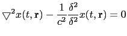
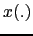
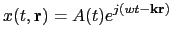
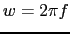
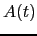
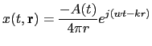
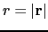
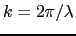

Next: Passive Apertures Up: Introduction to Acoustic Array Previous: Introduction to Acoustic Array Contents
In general, in terms of signal propagation, an active speaker can be considered as an acoustic source which emits an acoustic signal that propagates through the air until it reaches each of the microphones in the room. In order to define an equation for such acoustic signal one can consider it as a longitudinal wave that propagates generating areas of compression and expansion. Using Newton's equations of motion of the volume in a fluid, and considering a semi-ideal case (McCowan (2001), Brandstein and Ward (2001)) one obtains:
|  | (2.23) |
were
is the Laplacian operator,
 is the wave field (of any sort) as a function if time and
space,
 is the 3D position of the wave and
is the 3D position of the wave and  is the
speed of sound (about 330 m/s in air).
is the
speed of sound (about 330 m/s in air).
In microphone array processing this equation can be solved for two particular cases. On one hand, when the acoustic wave field is considered monochromatic and plane (for far-field conditions) it is solved as
|  | (2.24) |
where  is the considered frequency (in radiants per second),  is the wave field amplitude and is the wavenumber and is defined as
where  is the wavelength (
is the wavelength (
 ),
and
),
and  are the polar coordinates for elevation and
azimut (respectively) of the waveform position in space.
are the polar coordinates for elevation and
azimut (respectively) of the waveform position in space.
On the other hand, when the wave is considered spherical (propagating in all directions), as used in near-field conditions, it is solved as
|  | (2.25) |
where now  determines the scalar distance to the source in any direction and k is the scalar version of the wavenumber,  for all directions.
From these formulas one can observe how any acoustic wave can be sampled both in time and space in a similar way (both dimensions being in the exponential). Time sampling is done to obtain a digital signal and space sampling is done by a microphone array. In both cases one can reconstruct the original signal as long as it complies with the Nyquist rule (Ifeachor and Jervis, 1996) (or else there will be spacial/temporal aliasing).